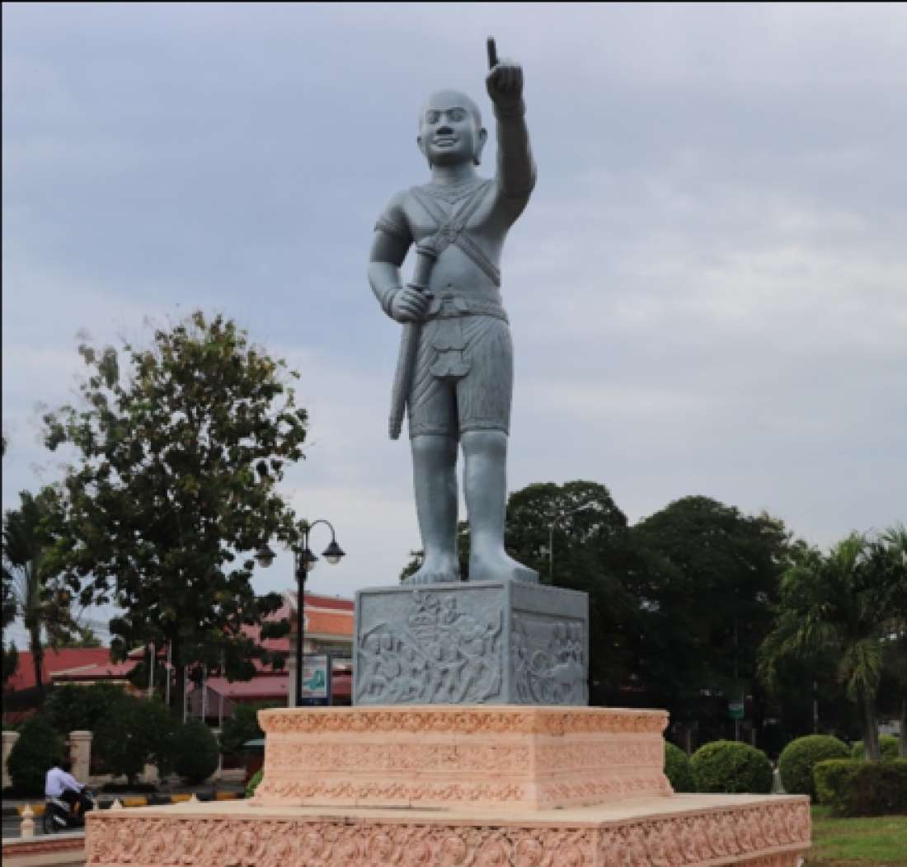

 ខេត្តព្រៃវែង គឺជាខេត្តមួយនៃប្រទេសកម្ពុជា ខេត្តព្រៃវែងជាខេត្តមួយដែលស្ថិតនៅតំបន់ទំនាបកណ្ដាលជាខេត្តដែលផលិតស្រូវច្រើនជាងគេក្នុងប្រទេសកម្ពុជា ខេត្តព្រៃវែងជាខេត្តមួយដែលមានចំនួនប្រជាជន១.១ លាននាក់ច្រើនជាងគេទី៣នៅក្នុងប្រទេសកម្ពុជា ខេត្តព្រៃវែងជាប់នឹងដងទន្លេមេគង្គដែលអំណោយផលក្នុងវិស័យកសិកម្មផងដែរ។ខេត្តព្រៃវែង មានទីតាំងនៅភាគនិរតីនៃទន្លេមេគង្គដ៏មានសក្ដានុពល។ ហើយខេត្តព្រៃវែងមានទីរួមខេត្តមួយគឺ ក្រុងព្រៃវែង ។ជាយូរលង់ណាស់មកហើយ ស្រុកបាភ្នំ កកើតឡើងដោយមានឈ្មោះថា នគរបាភ្នំ។ នគរនេះមានព្រះមហាក្សត្រ បានដឹកនាំមេទ័ពស្រី និងប្រុសយ៉ាងខ្លាំងពូកែ គ្រប់គ្រងលើតំបន់អាណាខេត្តនានា ទាំងអស់។ ទ័ពការពារ នគរបាភ្នំ មានទ័ពបា និងទ័ពមេជាច្រើន ហើយបណ្តាទ័ពបរទេសតែងបាក់ខ្លបខ្លាចទ័ពនគរបាភ្នំ។ នៅសម័យនោះ គឺស្រីដែលដណ្តឹងប្រុស។ ម្យ៉ាងទៀតទ័ពបានិងទ័មេតែងតែប្រឡងប្រជែងគ្នា លើការងារបំរើនគរហើយនាំគ្នាពូនភ្នំប្រឡងប្រជែង។ ខាងបាគេពូនភ្នំខាងបាខាងមេដែងគេពូនខាង មេដែង និងសន្មតផ្កាយព្រឹករះគឺឈប់សំរាកពូនភ្នំ។ ពេលនោះទ័ពខាងមេដែលមានល្បិចចង់ឈ្នះទ័ពខាងបាបានធ្វើគោមហោះមួយខ្ពស់នៅខាងគេ។ ខាងបាកាលបានមើលឃើញគោមនោះរះឡើង ស្មានថាផ្កាយព្រឹករះក៏ឈប់សំរាកពូនភ្នំ។ ខាងទ័ពមេដែងគេនៅតែពូនភ្នំដល់ផ្កាយព្រឹករះ។ ដូច្នេះ ខាងមេដែងគេពូនភ្នំបានខ្ពស់ជាខាងទ័ពបា។គេបន្ត ប្រឡងប្រជែងគ្នា ខាងបាញ់ធ្នូទៅវិញទៅមកបន្តទៀត។ ខាងទ័ពបាគេកាច់ឈើល្អៗធ្វើព្រួញបាញ់ទៅខាងមេដែងជាប់នាមថាភ្នំឈើកាច់ ។ ខាងភ្នំមេដែងមានដើមឈើល្អៗដុះរហូតមកដល់សព្វថ្ងៃនេះ។ ខាងទ័ពភ្នំ មេដែង គេកាច់ឈើតូចតាចមិនល្អធ្វើព្រួញបាញ់មកខាងទ័ពភ្នំបា។ ម្លោះហើយភ្នំឈើកាច់មានដើមឈើតូចតាច ទាប មិនល្អដុះរហូតមកដល់សព្វថ្ងៃ ជាប់នាមមកថា បាភ្នំ និង ភ្នំមេដែង ។ បណ្តាទ័ពភ្នំបា និង ភ្នំមេដែង បានបន្តប្រឡងប្រជែងមហិទ្ធិរិទ្ធដោយទ័ពបា ប្រើដំរីស្តរ ទៅពិតភ្នំមេដែង បាក់ មួយជំហៀងខាងជើង ឯទ័ពខាងភ្នំមេដែង ប្រើមាន់សម្រាប់កកាយភ្នំបា ឱ្យរតាត់រតាយ គ្នីគ្នា ដូចជា ភ្នំមាន់កាយ ក្លាយមកជាភ្នំធម្មាការជាដើម ។ មេទ័ពមួយមានហិទ្ធិរិទ្ធិខ្លាំងពូកែឈ្មោះ តេជោ មានប្រព័ន្ធឈ្មោះ រ័ត្ន ជាសិស្សសំណប់ចិត្តរបស់ព្រះមហាក្សត្រគ្រប់គ្រងទាំងអស់។ តេជោ និងនាងរ័ត្នមានកូនប្រុសមួយឈ្មោះថា មគ្គរីផល ហើយបានបញ្ជូនទៅបំពេញវិជ្ជានៅសាលាទ័ពនគរក្រិច។ ស្តេចក្រិចទទួលរាប់អានស្រឡាញ់មគ្គរីផលណាស់ ដោយប្រគល់មគ្គរីផលឱ្យទៅមេទ័ពក្រិចម្នាក់ដែលជាអាចារ្យទេសាបាមោក បង្ហាត់បង្រៀនក្បួនវេទមន្ត និងក្បួនចំបាំងសាងសង់ទាំងឡាយ។ មគ្គរីផលរៀនសូត្រពូកែលើសសិស្សដទៃ ពេលនោះស្តេចក្រិច និងអាចារ្យទេសាបាមោក ទ្រង់សព្វព្រះហឫទ័យនិងស្រឡាញ់មគ្គរីផលណាស់។ ស្តេចក្រិចទ្រង់បញ្ជាឱ្យមេទ័ពក្រិច គឺអាចារ្យទេសាបាមោកឱ្យរកល្បិចយ៉ាងណាកុំឱ្យមគ្គរីផលវិលត្រឡប់មកនគរបាភ្នំវិញ។ មេទ័ពក្រិចមានកូនក្រមុំមួយឈ្មោះថា មេ ស ដែលគាត់នឹងផ្សំផ្គុំឱ្យមគ្គរីផល។ មេទ័ពក្រិចរូបនោះបាននិយាយលួងលោមផង និងបាននិយាយគំរាមផង ដោយថា បើមគ្គរីផលក្បត់សន្យានឹងកាត់ក្បាលចោល រហូតធ្វើឱ្យមគ្គរីផលខ្លាចនិងធ្វើតាមកិច្ចសន្យា។ បន្ទាប់ពីបានក្លាយជាមេទ័ព និងបានរៀបការជាមួយនាងមេ ស អស់រយៈបីឆ្នាំពួកគេក៏ទទួលបានកូនប្រុសមួយឈ្មោះថា គរីជោត។ កាលនោះនគរភ្នំមានកើតសឹកសង្រ្គាម និងទ័ពជិតខាងឈ្លានពាន ព្រះមហាក្សត្រនគរភ្នំបានត្រាស់បញ្ជាឱ្យតេជោដែលមានវ័យចាស់ប្រមូលពលវាយបង្រ្កាបសត្រូវ។ ឆ្លៀតឱកាសនោះតេជោជាឪពុកបានផ្ញើសំបុត្រមួយទៅមគ្គរីផលដែលជាកូន ដោយបញ្ជាក់ថាគាត់ឈឺធ្ងន់។